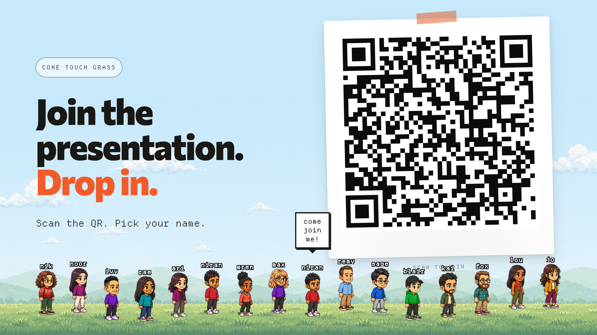
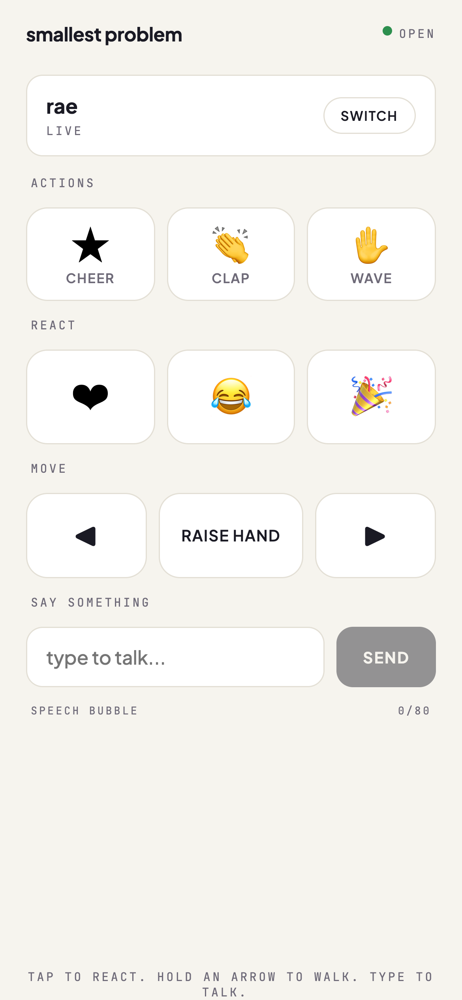

Side project · Real-time multiplayer · Two evenings
Come touch grass
A live back-channel that puts the room back into remote talks. The audience scans a QR, picks a little pixel character, and shows up as a tiny crowd in a meadow under my slides, walking, waving, and reacting in real time while I present.
- Role
- Designed and built solo
- Surfaces
- Two: a presenter stage and a phone controller
- Built with
- PartyKit, vanilla JS, a hand-drawn sprite engine
- Shipped as
- A live talk to my design team
 tap any character
tap any character
A remote talk, right now
A wall of muted tiles. No nods, no laughs, no idea if anything is landing.
This is the real audience controller, rebuilt on the page. On a phone it fits on a thumb. You can also tap any character in the meadow directly.
The short version
The problem
Presenting into a wall of muted tiles
Half of every audience is remote now. You are mid-sentence, looking at a grid of muted rectangles, with no idea if anything is landing. In a room you read faces. On a call you get silence and a participant count.
So I asked the smallest version of the question, not "what's the best engagement platform" but "could I just see the room again?" Two evenings, only tools already on my laptop. The bet: presence beats features. Not a dashboard of controls, just a meadow under the slides where everyone shows up and reacts in real time.
The features
Everything the audience can do
Each one is a single tap on the phone, and lands on the presenter's screen instantly. Here is the whole vocabulary, looping live:
Wave hello
New arrivals wave themselves in, so joining the room is its own little hello.
Cheer
Applause you can actually see. The whole field can erupt at once on a good line.
Clap along
A quieter, steadier signal than a cheer, for the moment a point quietly lands.
Raise a hand
Hands stay up until you lower them, so Q&A works like it does in a real room.
Walk around
Hold an arrow to wander the meadow, drift toward a friend, or find your own spot.
Float a reaction
Hearts, laughs, and party poppers drift up over the crowd and fade, like a live reaction bar.
Say something
Type a short line and it floats over your head for a beat. A back-channel, in the open.
Meet Biscuit
Every good meadow needs a dog. The presenter can summon him to lighten the mood.
These are the real sprites from the talk, looping here. Want to drive them yourself? Play with the live room above.
In the room
What it looked like, live


Under the hood
The details that make it feel alive
-
A sprite system, not stickers
Every character is a hand-built pixel sheet sharing one pose vocabulary (idle, walk, cheer, clap, wave). A small engine drives poses, floating reactions, and speech bubbles, the same engine running the cards and room on this page.
-
Real-time, hand-rolled
I wrote the live server myself, with a long reconnect grace so a phone that falls asleep keeps its seat for the whole talk. The least glamorous part, and the part that makes the magic feel reliable.
-
Built to behave
Motion respects reduced-motion, animations pause when scrolled out of view, every control is a keyboard-reachable button, and nothing depends on sound alone.
How it went
The warmth came back
I gave the talk live to my design team. People joined within seconds. The crowd reacted as I spoke, hands went up during Q&A, and a few speech bubbles made both rooms laugh at once, the one in front of me and the one on the call. The characters stayed on stage the whole time. That warmth I had been missing on remote calls was back, not measured, just felt, by everyone at once.
Why it matters
Reading the room is an interface problem
We accepted that remote presence means staring at muted rectangles, and that the fix is always more features. This was a small argument against both: a little presence, designed with care, does more than a wall of controls. It is also why I do this, noticing a small, real friction and making something that brings a little joy to the other side of it.
The medium was the message: a small thing, made in a couple of evenings, that put the room back together.